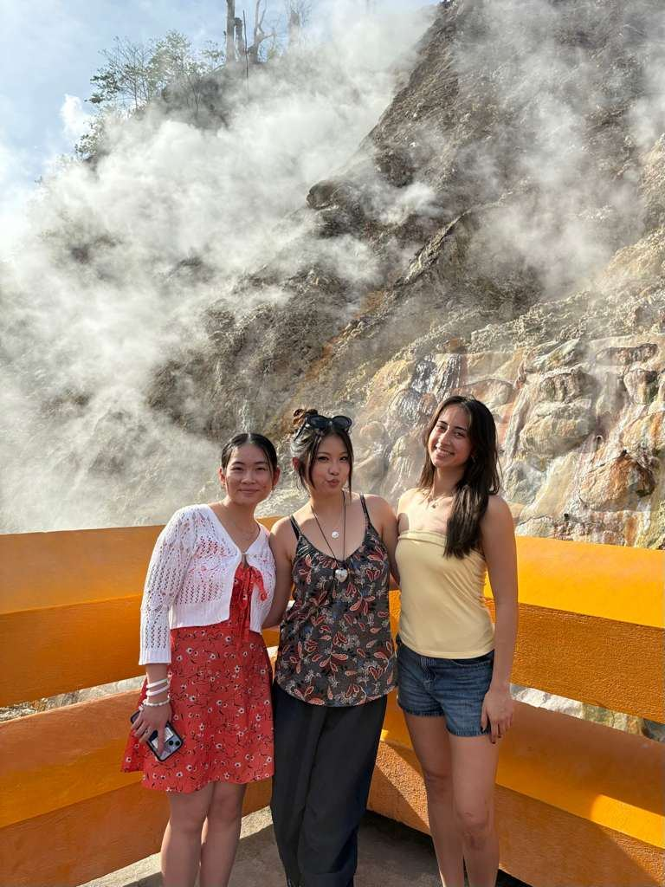
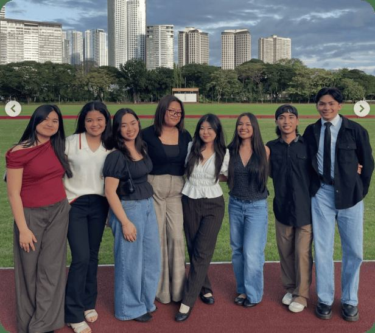
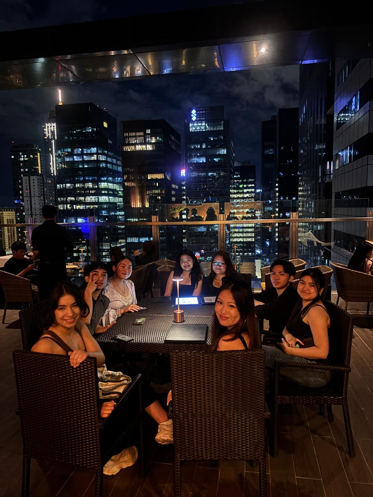
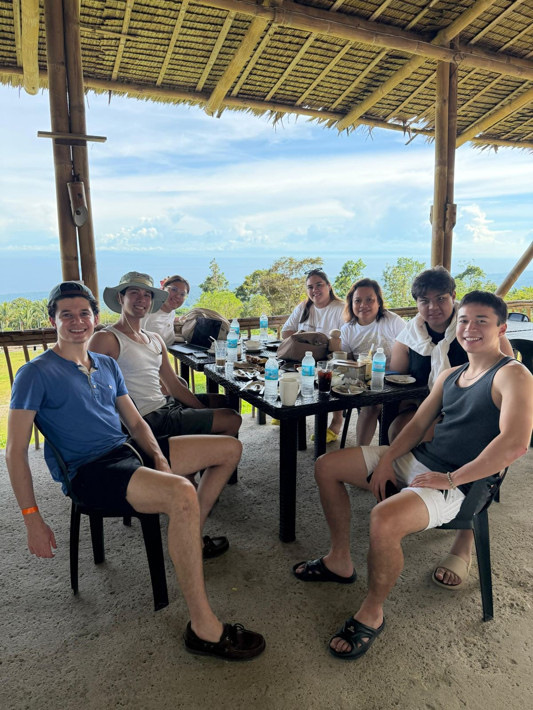
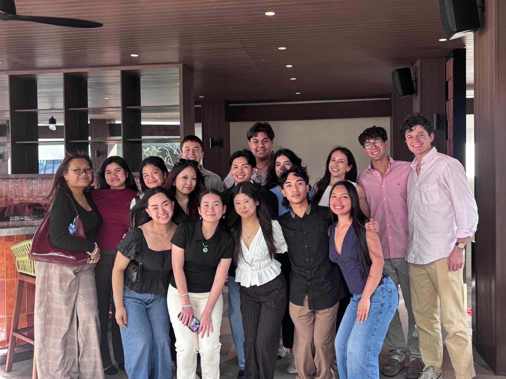

J-Term trip to the Philippines
Each January, a team of approximately 15 students flies to Manila to take on a project of their choosing. The project must be sustainable and create a lasting impact on the community the team works with.

2027 J-Term Philippines Trip
The trip is open to all Harvard College students. Besides the main project, participants also get to see Philippine sites like beaches, museums, and historical landmarks.
The program is funded in part by the Harvard Asia Center, HCPG, our alumni donors, and several generous sponsors in the Philippines.
Applications for the 2027 trip closed October 9. Follow @philippineforum or join our GroupMe to hear about the next round.
Our most recent trip
Thanks to the support of the Harvard Asia Center, HCPG, and our alumni donors, HPF hosted another successful J-Term trip to the Philippines this winter.








Past trips
2013: the first J-Term trip
In 2013, the first year of the trip, the team created a mobile library for the non-profit Child Hope Asia to use in its street education sessions. They also held self-expression workshops for street children, who put on a fundraising performance at the end of the three weeks.
The team also visited Stairway Foundation in Mindoro, a rehabilitation center for abused street children, worked with schools in Tagaytay, and volunteered with Gawad Kalinga, Hands on Manila, and Beacon Academy. Read the team's blog.
Videos from 2013


Join the pamilya
Anyone can join HPF. Join our GroupMe to hear about brunches, study breaks, performances, and the next J-Term trip.